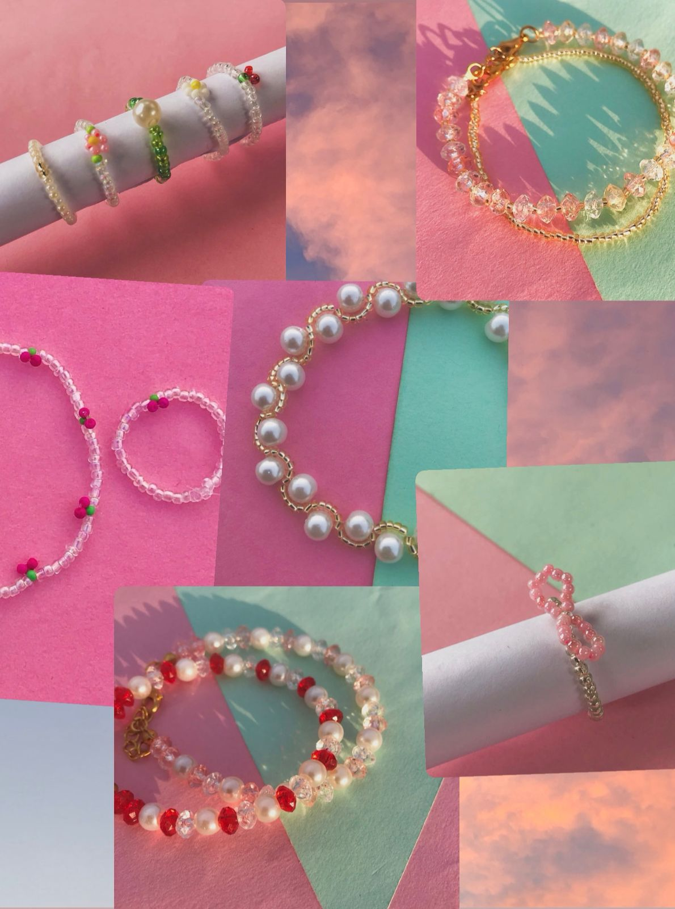

Say Hello
We'd love to hear from you!
Whether you have a question about our pieces or just want to say hi, feel free to reach out. Every bead tells a story, and we'd love to be part of yours.

alternate_email
Email Support
We respond to all inquiries within 24-48 hours.
favorite
Community
Tag us in your photos to be featured in our journal.
@beadsby.bii